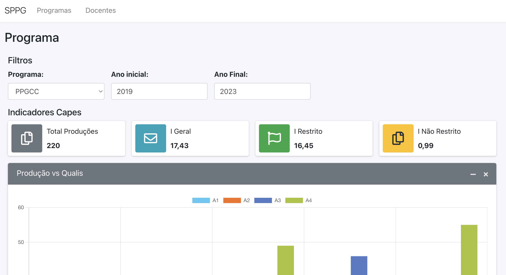
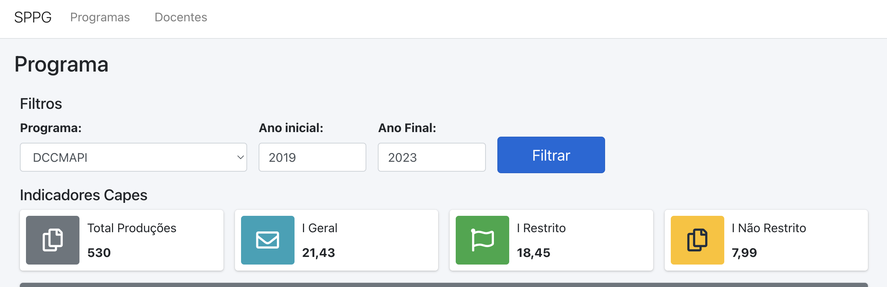
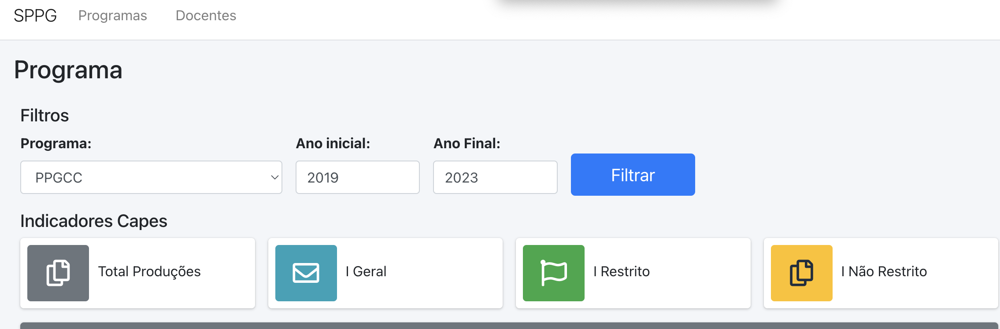

name: inverse class: center, middle, main-title # Gerenciamento de Estado e Requisições ao Backend Laboratório de Programação --- # Objetivo - Determinar os estados e fazer as ligações necessárias - Construir requisições usando Axios --- ## Situação atual <center></center> --- ## Situação atual - `Filtros` determinam como os demais componentes serão renderizados - Estados: > Programa --> lista com id > Ano inicial --> valor numérico inteiro > Ano final --> valor numérico inteiro - Os estados podem ficar no componente `Programa` - Sugestão para centralizar os estados --- ## Definindo Estados em `Programa` para `Filtro` - Passo 1: definido os estados e passando as funções para o componente ```JSX import {useState} from 'react' //vai vir de requisição no futuro const programas = [ {id:1, nome:"PPGCC"}, {id:2, nome:"DCCMAPI"}, ] export default function Programa() { const [progSel, setProgSel] = useState(0); const [anoini, setAnoIni] = useState(0); const [anofim, setAnoFim] = useState(0); function onSearch() { //quando clicar em filtrar, atualizar os componentes //TODO } ... <Filtro programas={programas} filtroProg={progSel} onProgChange={setProgSel} filtroAnoIni={anoIni} onAnoIniChange={setAnoIni} filtroAnoFim={anoFim} onAnoFimChange={setAnoFim} onSearch={onSearch}/> ``` --- ## Refatorando componente `Filtro` - Passo 2: mudando a declaração ```JSX export default function Filtro({programas, filtroProg, onProgChange, filtroAnoIni, onAnoIniChange, filtroAnoFim, onAnoFimChange, onSearch}) { //bloco para carregar os itens passados para o select const lstSelect = programas.map((programa) => ( <option value={programa.id}>{programa.nome}</option> ) ) ``` --- ## Refatorando componente `Filtro` - Passo 3: mudando o select ```JSX ... <div className="form-group"> <label>Programa:</label> {/*value recebe o estado específico*/} {/*onChange recebe a função de alteração do estado*/} <select className="form-control" style={{width:'100%'}} onChange={(e) => onProgChange(e.target.value)} value={filtroProg} > {/*As opções obtidas por parâmetro*/} {lstSelect} </select> </div> .... ``` --- ## Refatorando componente `Filtro` - Passo 4: mudando os inputs ```JSX <div className="col-2"> <div className="form-group"> <label>Ano inicial:</label> <input className="form-control" value={filtroAnoIni} onChange={ (e) => onAnoIniChange(e.target.value)}/> </div> </div> <div className="col-2"> <div className="form-group"> <label>Ano Final:</label> <input className="form-control" value={filtroAnoFim} onChange={ (e) => onAnoFimChange(e.target.value)}/> </div> </div> ``` --- ## Refatorando componente `Filtro` - Passo 5: Adicionando um botão ```JSX <div className="col-2"> <div className="form-group"> <label></label> <button type="button" className="btn btn-block btn-primary btn-lg" onClick={onSearch}>Filtrar </button> </div> </div> ``` - Agora, todos estão ligados com um estado. - O que acontece quando clicar em filtrar? - Os conteúdos dos `Indicadores`, `Gráfico` e `Tabela` devem ser atualizados - Com dados consumidos por `requisições` --- name: inverse class: center, middle, main-title # Requisições com Axios --- # Adicionar o axios - Objetivo: fazer as requisições - `npm install axios` - <a href="https://github.com/axios/axios">Site do Axios</a> --- # API - Para o teste `indicadores` - Parâmetros: - `programa=2` - `anoIni=2019` - `anoFim=2023` - BaseURL = `http://localhost:8080/api/programa/` - URL completa: http://localhost:8080/api/programa/indicadores?programa=2&anoIni=2019&anoFim=2023 --- # Exemplo de GET - `axios.get` - `.then` o que você faz se ok - `.catch` o que você faz se deu erro ```JSX axios.get(`${baseURL}/asdf`) .then((response) => { setData(response.data); }).catch(error => { console.log(error.response); }); ``` --- ## Uma melhoria - O axios permite configurar algumas propriedades - usando o `create` ```JSX const client = axios.create({ baseURL: "http://localhost:8080/api/programa/" }); function exemploGet() { client .get("/indicadores") .then(() => { setAlgumaCoisa(response.data); }); } ``` --- ## Outros métodos ```JSX const client = axios.create({ baseURL: "http://localhost:8080/api/programa/" }); function createPost() { client .post("/postURL", { dado: "Hello World!" }) .then((response) => { setData(response.data); }); } ``` - Similar para `put` e `delete` --- ## Ok, então vamos fazer uma função para atualizar os dados - Em `Programa` ```JSX import axios from 'axios' ... const client = axios.create({ baseURL: "http://localhost:8080/api/programa/" }); ... const [indicadores, setIndicadores] = useState({}); ``` --- ## Ok, então vamos fazer uma função para atualizar os dados - Em `Programa` ```JSX ... function onSearch() { client.get(`indicadores?programa=${progSel}&anoIni=${anoIni}&anoFim=${anoFim}`) .then( (response) => { console.log(response.data) setIndicadores(response.data) } ).catch(error => { console.log(error.response); }); } ... ``` --- ## Erro! - Se você testar, verá um erro: > CORS Policy - CORS: Cross-origin Resource Sharing - Configuração de uma aplicação acessar a outra na rede --- ## Erro: solucioando - Volte ao Java, e configure o CORS - habilite o acesso a API - Adicione a anotação `@EnableWebMvc` - e sobrescreva o método `addCorsMappings` - CORS = Cross-origin resource sharing - Você pode configurar quais serão as origens das requisições e quais deseja aceitar - <a href="https://spring.io/guides/gs/rest-service-cors/">DOC</a> --- ## Erro: solucioando ```java @SpringBootApplication public class ExemploApplication implements WebMvcConfigurer { @Override public void addCorsMappings(CorsRegistry cors) { cors.addMapping("/**") .allowedMethods("GET", "PUT", "DELETE", "POST", "OPTIONS"); } public static void main(String[] args) { SpringApplication.run(ExemploApplication.class, args); } } ``` --- ## Dados para quem renderiza `Indicadores` ```JSX export default function Indicadores({dados}) { return ( <> <h5 class="mb-2">Indicadores Capes</h5> <div class="row"> <Infobox nome="Total Produções" valor={dados.totalProd} bg="gray" icon="fa-copy" /> <Infobox nome="I Geral" valor={dados.igeral} bg="info" icon="fa-envelope" /> <Infobox nome="I Restrito" valor={dados.irestrito} bg="success" icon="fa-flag" /> <Infobox nome="I Não Restrito" valor={dados.inaoRestrito} bg="warning" icon="fa-copy" /> </div> </> ); } ``` --- ## Dados para quem renderiza `Indicadores` - ainda em programa, passe os dados! ```JSX <Indicadores dados={indicadores}/> ``` - Isso funciona, após o clique em `Filtrar` <center></center> --- ## Mas, ... e ao carregar a página? - não apresenta o resultado - não foi carregado o estado inicial <center></center> --- ## Resolvendo com `useEffect` - Componente precisa ser atualizado durante o `mount` - Usar o hook <a href="https://react.dev/reference/react/useEffect"> useEffect </a> ```JSX useEffect(() => { //operações const connection = createConnection(serverUrl, roomId); connection.connect(); //limpeza (caso necessário) return () => { connection.disconnect(); }; }, //lista de dependencias - estados usados nos componentes e que podem ser atualizados [serverUrl, roomId]); ``` --- ## Resolvendo com `useEffect` ```JSX useEffect( () => { document.body.classList.add('hold-transition', 'layout-top-nav'); onSearch(); } ) ``` - Problema? Sim! Observe que ele fica rodando num laço infinito - Como resolver? - Use uma dependência (mesmo que vazia []) ```JSX useEffect( () => { document.body.classList.add('hold-transition', 'layout-top-nav'); onSearch(); }, [] ) ``` --- ## Resolvendo com `useEffect` - Legal pensar essa aplicação sem o botão `Filtrar`: - qualquer atualização dos estados mudariam os dados - a requisição poderia ficar dentro do `useEffect` - a dependência deveria ser informada ```JSX useEffect( () => { document.body.classList.add('hold-transition', 'layout-top-nav'); client.get(`indicadores?programa=${progSel}&anoIni=${anoIni}&anoFim=${anoFim}`) .then( (response) => { console.log(response.data) setIndicadores(response.data) } ).catch(error => { console.log(error.response); }); }, [progSel, anoIni, anoFim] ) ``` - Isso é realmente legal. --- name: inverse class: center, middle, main-title # Divirta-se construindo o restante